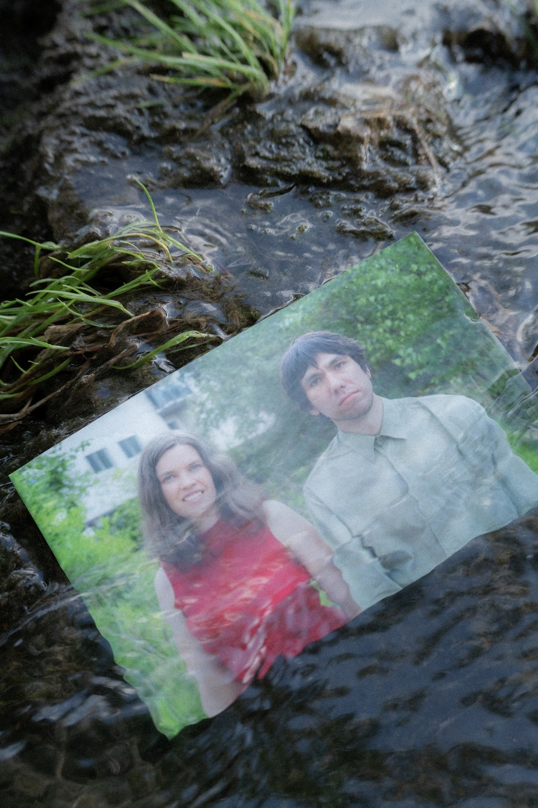

Multilayer sensory imaginaries connected to specific places. Photography, sound, voice, video, and writing.
scrollMessy Sensing emerged from a fascination with multilayer sensory imaginaries connected to specific places. It works with photography and sound (through the body called Reza Kellner), voice, video, and writing (through the body called Anna Jurkiewicz).
It wants to honour all kinds of bodies, surrounded and absorbed by messy feasting and messy growing. Perpetual sensory exchanges and negotiations between crowds of not closely related bodies, affected by each other.

she / her
A transdisciplinary artist working with voice, video, writing, performance and sound. She engages in artistic research around human emotions and non-human timelines, architectures and interactions.
Her projects explore karst landscapes created by water through deep-time processes of dissolution and sedimentation, and focus on multispecies relations that produce space and habitats. Her practice often comes with the intention of strengthening interspecies empathy through sensory walks, collective mapping, writing ecopoetry and performing participatory scores for interspecies choreographies of embodied cognition.
Her long-term research involves springtails, small organisms that recycle matter, facilitating growth and photosynthesis (Silent Partners project). As a sound artist, she works with field recording, voice and found footage to create intimate multi-layered sound textures. Participant of art residencies in Poland, Austria, Czech Republic, Ireland and Sweden.
he / him
Born and raised in Tehran, Iran, and currently living in Graz, Austria. A multimedia artist working with experimental music, sound art, experimental film, video installations, and photographs.
His practice is rooted in the connection to the senses, inward and outward perceptions, and exploring material and environmental processes and relations.
Performing as Lake Urumia, he works at the intersections of sound art, field recording, and live electronics. His work has been presented at Unsafe+Sounds (Vienna), Elevate Festival (Graz), Steirischer Herbst, and as part of the SHAPE Platform.
Exhibitions, performances, group shows, concerts, and other events — chronological, newest first.